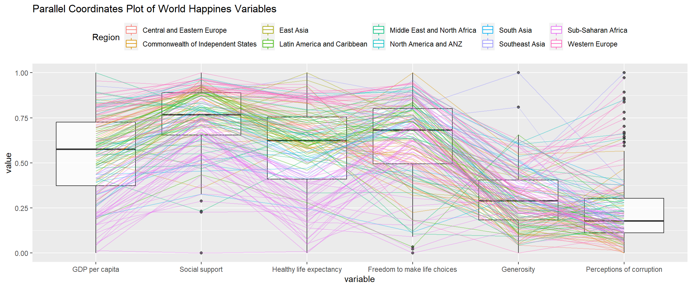
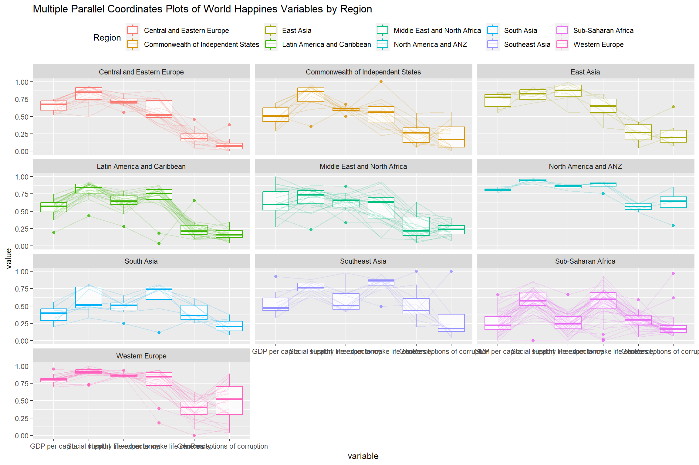
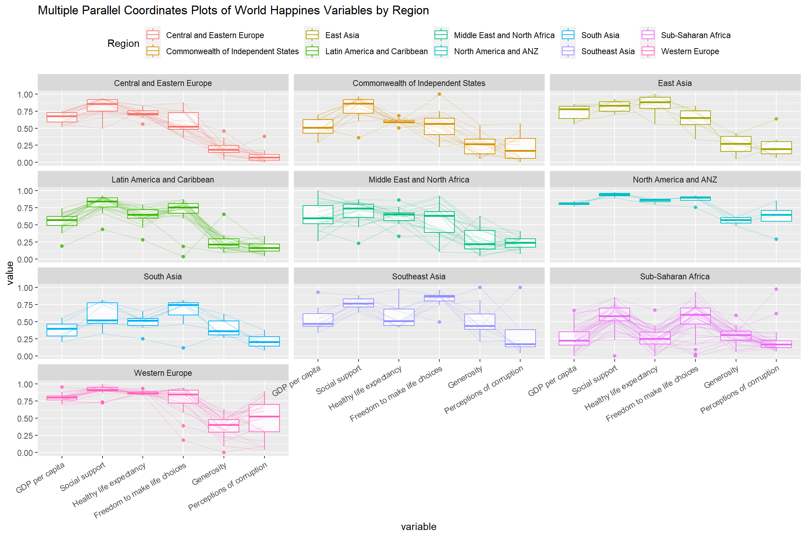

13 Visual Multivariate Analysis with Parallel Coordinates Plot
Hands-On Exercise for Week 6
(First Published: May 18, 2023)
13.1 Learning Outcome
We will learn how to create static and interactive Parallel Coordinates plots using various R packages.
Parallel coordinates plot is a data visualisation specially designed for visualising and analysing multivariate, numerical data. It is ideal for comparing multiple variables together and seeing the relationships between them. For example, the variables contribute to Happiness Index. Parallel coordinates was invented by Alfred Inselberg in the 1970s as a way to visualize high-dimensional data. This data visualisation technique is more often found in academic and scientific communities than in business and consumer data visualizations. As pointed out by Stephen Few(2006), “This certainly isn’t a chart that you would present to the board of directors or place on your Web site for the general public. In fact, the strength of parallel coordinates isn’t in their ability to communicate some truth in the data to others, but rather in their ability to bring meaningful multivariate patterns and comparisons to light when used interactively for analysis.” For example, parallel coordinates plot can be used to characterise clusters detected during customer segmentation.
13.2 Getting Started
13.2.1 Install and load the required R libraries
Install and load the the required R packages. The name and function of the new packages that will be used for this exercise are as follow
GGally : provides additional functions and tools for creating more complex and customized plots
parallelPlot : for creating parallel coordinate plots
13.2.2 Import the data
We import the data set for World Happines 2018 report and assign it to wh.
13.3 Create static parallel coordinates plot
13.3.1 A simple parallel coordinates plot
We will learn how to plot static parallel coordinates plot by using ggparcoord() of GGally package. Before getting started, it is a good practice to read the function description in detail.

Notice that only two arguments, namely data and columns is used. data argument is used to map the data object (i.e. wh) and columns is used to select the columns for preparing the parallel coordinates plot.
13.3.2 Including a boxplot
The basic parallel coordinates failed to reveal any meaning understanding of the World Happiness measures. We will learn how to makeover the plot by using a collection of arguments provided by ggparcoord().
Show the code

groupColumnargument is used to group the observations (i.e. parallel lines) by using a single variable (i.e. Region) and colour the parallel coordinates lines by region name.scaleargument is used to scale the variables in the parallel coordinate plot by usinguniminmaxmethod. The method univariately scale each variable so the minimum of the variable is zero and the maximum is one.alphaLinesargument is used to reduce the intensity of the line colour to 0.2. The permissible value range is between 0 to 1.boxplotargument is used to turn on the boxplot by using logicalTRUE. The default isFALSE.titleargument is used to provide the parallel coordinates plot a title.
13.3.3 Parallel Coordinates plots with facet
Since ggparcoord() is developed by extending ggplot2 package, we can combination use some of the ggplot2 function when plotting a parallel coordinates plot.
In the code chunk below, facet_wrap() of ggplot2 is used to plot 10 small multiple parallel coordinates plots. Each plot represent one geographical region such as East Asia.
Show the code

One of the aesthetic defect of the current design is that some of the variable names overlap on x-axis.
13.3.4 Rotating x-axis text label
To make the x-axis text label easy to read, let us rotate the labels by 30 degrees. We can rotate axis text labels using theme() function in ggplot2.
Show the code
ggparcoord(data = wh,
columns = c(7:12),
groupColumn = 2,
scale = "uniminmax",
alphaLines = 0.2,
boxplot = TRUE,
title = "Multiple Parallel Coordinates Plots of World Happines Variables by Region") +
facet_wrap(~ Region, ncol=3) +
theme(legend.position = "top",
axis.text.x = element_text(angle = 30, hjust=1))
To rotate x-axis text labels, we use axis.text.x as argument to
theme()function. And we specify element_text(angle = 30)to rotate the x-axis text by an angle 30 degree.Rotating x-axis text labels to 30 degrees makes the label overlap with the plot and we can avoid this by adjusting the text location using hjust argument to theme’s text element with
element_text(). We use axis.text.x as we want to change the look of x-axis text.
13.4 Create Interactive Parallel Coordinates Plot with parallelPlot
parallelPlot is an R package specially designed to plot a parallel coordinates plot by using ‘htmlwidgets’ package and d3.js.
13.4.1 The basic plot
We create an interactive parallel coordinates plot by using parallelPlot().
Show the code
Notice that some of the axis labels are too long. We will address this problem in the next step.
13.4.2 Rotate axis label
In the code chunk below, rotateTitle argument is used to avoid overlapping axis labels.
13.4.3 Parallel coordinates plot with histogram
histoVisibility argument is used to plot histogram along the axis of each variables.
13.5 References
ggparcoord() of GGally package
\(**That's\) \(all\) \(folks!**\)